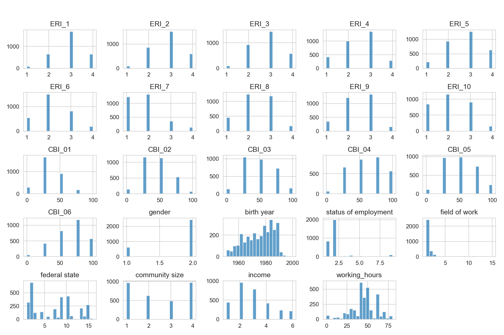
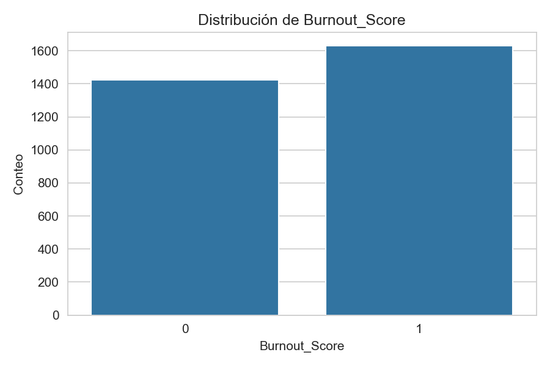
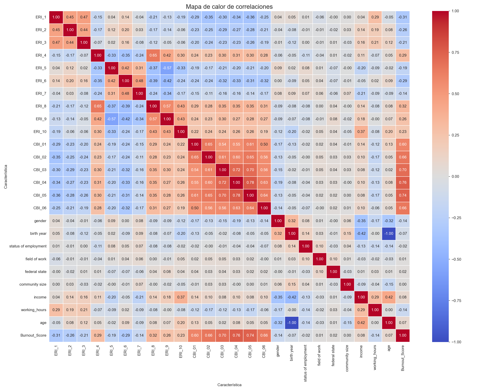
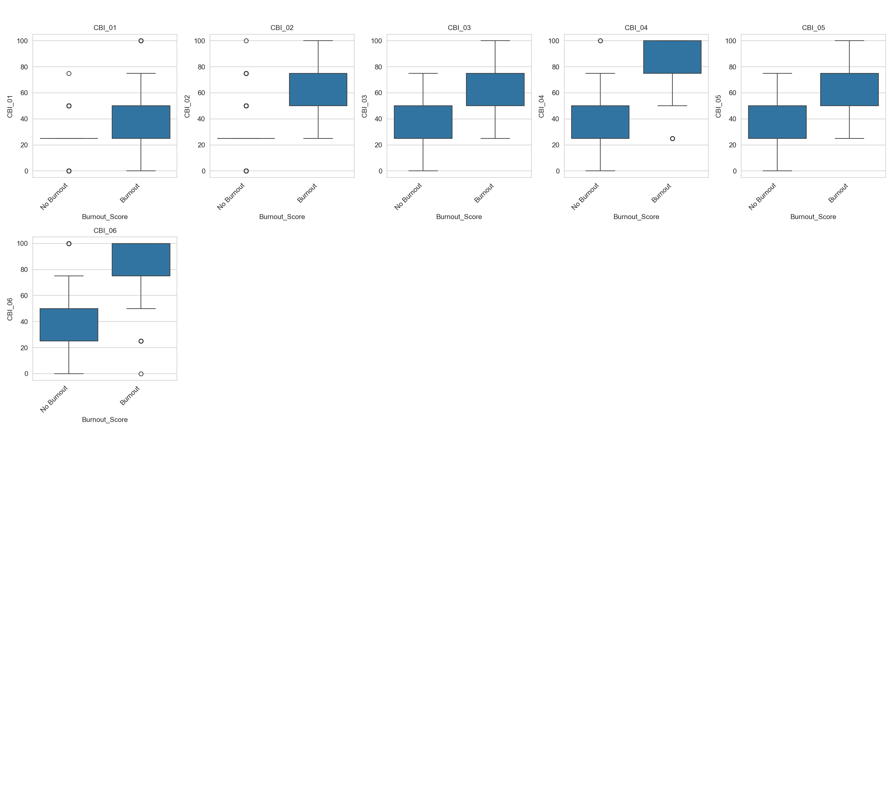

BurnoutGuard
Sistema de Detección Temprana de Riesgo de Burnout — Trabajo de Fin de Máster · Master in Big Data and Business Intelligence · Next Educación 2026
Daniel Vargas Salazar · David Mejía Cascante · Juan Luis Chávez Mejía · María Cubero Sandoval · Melany Jiménez Nin
Director: Belarmino García | Tutor: Mariano Muñoz | Madrid, 18 de junio 2026
Resumen
El presente Trabajo Final de Máster desarrolla una propuesta de sistema analítico orientado a la detección temprana del riesgo de burnout laboral mediante la integración de técnicas de Business Intelligence, análisis exploratorio de datos, visualización interactiva en Tableau Desktop y modelos supervisados de Machine Learning. El estudio utiliza como fuente principal un dataset de 3181 registros correspondientes a profesionales veterinarios en Alemania, con información sociodemográfica, laboral y psicométrica basada en el Copenhagen Burnout Inventory (CBI).
La metodología comprende la recolección, depuración y transformación de datos, el análisis exploratorio, el modelado relacional, el desarrollo de dashboards y la evaluación de modelos predictivos para la clasificación del riesgo de burnout. Los resultados evidencian que la integración de variables laborales, sociodemográficas y psicométricas permite identificar patrones relevantes asociados al agotamiento profesional. En conjunto, BurnoutGuard se plantea como una aproximación viable para apoyar procesos de People Analytics, visualización estratégica y gestión preventiva del bienestar organizacional.
Introducción
Antecedentes
El interés por el estudio del burnout ha aumentado significativamente durante los últimos años debido a las consecuencias observadas tanto en la salud de los trabajadores como en el desempeño organizacional. Diversos estudios han evidenciado que la exposición prolongada a factores de estrés laboral incrementa el riesgo de agotamiento emocional y disminuye la productividad (Maslach et al., 2001; Salvagioni et al., 2017).
La Organización Mundial de la Salud (OMS) incorporó oficialmente el burnout dentro de la Clasificación Internacional de Enfermedades (CIE-11) como un fenómeno ocupacional asociado al estrés laboral crónico no gestionado adecuadamente (World Health Organization, 2019). Esta incorporación consolidó el interés académico y empresarial por desarrollar mecanismos de prevención y detección temprana.
Paralelamente, el crecimiento de disciplinas como Big Data, Business Intelligence y People Analytics ha permitido que las organizaciones evolucionen hacia modelos de toma de decisiones basados en datos (Davenport et al., 2010; Marler & Boudreau, 2017). En este contexto, las áreas de recursos humanos han comenzado a incorporar herramientas analíticas orientadas a comprender fenómenos relacionados con el desempeño laboral, el bienestar organizacional y la retención del talento.
Diversas investigaciones han identificado que profesiones vinculadas con alta carga emocional presentan una mayor prevalencia de agotamiento profesional. Entre estas ocupaciones destaca el gremio veterinario, caracterizado por jornadas extensas, presión emocional, toma constante de decisiones críticas y exposición frecuente a situaciones de desgaste psicológico (Mastenbroek et al., 2014; Moses et al., 2018).
La convergencia entre analítica de datos y salud organizacional ha impulsado el desarrollo de investigaciones orientadas a construir sistemas predictivos capaces de identificar riesgos psicosociales antes de que se materialicen en consecuencias operativas severas (Boudreau & Cascio, 2017).
Justificación
La relevancia de esta investigación radica en la necesidad de desarrollar mecanismos preventivos que permitan identificar oportunamente factores asociados al burnout. En lugar de actuar cuando las consecuencias ya son visibles, las organizaciones pueden beneficiarse de modelos analíticos que apoyen la toma de decisiones basadas en evidencia.
Desde una perspectiva empresarial, la detección tardía del burnout genera costos significativos relacionados con ausentismo, rotación de personal, disminución del rendimiento y deterioro del clima organizacional (Salvagioni et al., 2017). A pesar de ello, numerosas organizaciones continúan utilizando enfoques reactivos basados únicamente en evaluaciones periódicas o intervenciones posteriores al deterioro del bienestar laboral.
Más allá del componente psicológico, el burnout tiene una clara dimensión económica para las organizaciones. Desde la teoría del capital humano se entiende que cada empleado representa una inversión específica de la empresa en formación y experiencia, inversión que se deteriora cuando las condiciones laborales producen agotamiento sostenido (Becker, 1964). La teoría de los salarios de eficiencia (Akerlof y Yellen, 1990) concluye que un entorno laboral percibido como injusto o desequilibrado se traduce en menor productividad, mayor rotación voluntaria y un menor retorno sobre la formación entregada.
El proyecto BurnoutGuard integra herramientas metodológicas y tecnológicas que combinan procesamiento de datos, análisis exploratorio y modelos supervisados para identificar patrones asociados al riesgo de burnout laboral.
Problema de investigación
A pesar de la creciente disponibilidad de información relacionada con el comportamiento laboral de los colaboradores, muchas organizaciones aún carecen de herramientas capaces de transformar estos datos en indicadores preventivos de riesgo psicosocial.
El fenómeno del burnout laboral se ha consolidado en la última década como uno de los desafíos más críticos para la salud ocupacional y la gestión de recursos humanos a nivel global (Salvagioni et al., 2017; Maslach & Leiter, 2016). Definido como un fenómeno multidimensional de agotamiento físico, emocional y mental, este síndrome emerge en contextos caracterizados por alta exigencia, sobrecarga sostenida de tareas y condiciones laborales desfavorables.
En este contexto, se formula la siguiente pregunta de investigación:
¿De qué manera la integración de Business Intelligence y modelos supervisados de Machine Learning puede facilitar la detección temprana del riesgo de burnout laboral mediante el análisis de variables sociodemográficas, laborales y psicométricas de veterinarios en Alemania?
Hipótesis
Hipótesis general
Las variables psicométricas y laborales de los ítems ERI 1-10 y psicométricas de las variables CBI 1-6 facilitan predecir significativamente el riesgo alto de burnout laboral mediante modelos supervisados de Machine Learning.
Hipótesis específicas
- Existe una relación significativa entre jornadas laborales extensas y niveles elevados de burnout.
- El desequilibrio esfuerzo-recompensa incrementa la probabilidad de agotamiento profesional.
- Los modelos supervisados están orientados a clasificar el riesgo de burnout con métricas de desempeño estadísticamente aceptables.
- Las variables demográficas influyen en la prevalencia del burnout dentro del gremio veterinario alemán.
Objetivos de Investigación
Objetivo general
Desarrollar BurnoutGuard como sistema analítico para la detección temprana del riesgo de burnout laboral mediante la integración de Business Intelligence, análisis exploratorio de datos y modelos supervisados de Machine Learning.
Objetivos específicos
- Seleccionar y depurar datasets relacionados con burnout laboral y variables psicométricas.
- Analizar variables sociodemográficas, laborales (ERI 1 al 10) y psicológicas (CBI 1 al 6) asociadas al agotamiento profesional.
- Desarrollar dashboards interactivos mediante Tableau Desktop para una visualización estratégica.
- Implementar modelos supervisados de Machine Learning para clasificación de riesgo.
- Evaluar el desempeño predictivo de los modelos mediante métricas de clasificación.
- Identificar variables relevantes para la predicción del riesgo de burnout.
- Proponer una arquitectura empresarial escalable para futuras implementaciones organizacionales.
Metodología
Las principales fases metodológicas comprenden:
- Recolección y depuración de datos.
- Transformación y normalización de variables.
- Análisis exploratorio de datos (EDA).
- Modelado relacional.
- Visualización interactiva en Tableau Desktop.
- Desarrollo de modelos supervisados de Machine Learning.
- Evaluación comparativa mediante métricas de clasificación.
Marco Teórico
Conceptualización del Síndrome de Burnout
El burnout debe analizarse como un síndrome multidimensional asociado al entorno laboral. El modelo de burnout propuesto por Maslach y Jackson (1981) describe este fenómeno a partir de tres dimensiones fundamentales: agotamiento emocional, despersonalización y baja realización personal.
El agotamiento emocional se refiere al desgaste físico y psicológico derivado de una exposición prolongada a situaciones de estrés laboral; la despersonalización implica el desarrollo de actitudes distantes o negativas hacia otras personas en el entorno de trabajo; mientras que la baja realización personal se manifiesta mediante una percepción negativa sobre el desempeño profesional y los logros alcanzados.
Modelos de Estrés Laboral y Riesgo Psicosocial
Modelo de Desequilibrio Esfuerzo-Recompensa (ERI): Propone que el estrés surge cuando el alto esfuerzo realizado por el trabajador no se corresponde con una recompensa adecuada en términos de salario, reconocimiento profesional o estabilidad laboral (Siegrist, 1996).
Diversos estudios señalan la diferencia conceptual entre el análisis teórico del burnout y su manifestación progresiva en contextos laborales reales. Profesionales altamente competentes tienden a normalizar las primeras señales del agotamiento, interpretándolas como episodios temporales, lo que retrasa la identificación del síndrome (Leiter & Maslach, 2016).
Diferencia entre estrés laboral y burnout
| Estrés laboral | Burnout laboral | |
|---|---|---|
| Duración | Temporal, ligado a un proyecto o periodo | Crónico, persiste semanas o meses |
| Emoción predominante | Ansiedad, hiperactivación | Vacío, desconexión emocional |
| Nivel de energía | Exceso de activación (nerviosismo) | Agotamiento total, sin reservas |
| Motivación | Presente pero desbordada | Ausente o cinismo activo |
| Recuperación | Descanso + eliminar el estresor | Requiere intervención profunda y tiempo |
| Impacto laboral | Rendimiento fluctuante | Desvinculación o abandono profesional |
| Relación con otros | Irritabilidad puntual | Despersonalización: tratar a compañeros y clientes como objetos |
| Reconocimiento OMS | Factor de riesgo psicosocial | Fenómeno ocupacional asociado al estrés laboral crónico no gestionado adecuadamente |
Tabla 1 – Comparación entre estrés laboral y Burnout
Estrategias de prevención
La prevención del burnout requiere la implementación de estrategias organizacionales orientadas al establecimiento de límites laborales saludables. Diversos autores indican la importancia de intervenciones organizacionales que promuevan el equilibrio entre demandas laborales y recursos disponibles, así como una cultura que favorezca el bienestar psicológico de los trabajadores (Maslach & Leiter, 2016).
Business Intelligence y Big Data
El uso de Business Intelligence y Big Data en contextos organizacionales permite gestionar grandes volúmenes de datos caracterizados por su volumen, velocidad y variedad, características que exceden las capacidades de los métodos tradicionales de análisis (Laney, 2001). Estas tecnologías facilitan la transformación de datos en conocimiento útil para apoyar la toma de decisiones estratégicas y operativas (Sharda et al., 2023).
Alcance y limitaciones
El alcance del estudio se centra en el desarrollo de un sistema analítico dirigido a la detección temprana del riesgo de burnout utilizando técnicas de Business Intelligence y Machine Learning. El proyecto no pretende sustituir evaluaciones clínicas ni diagnósticos psicológicos profesionales.
Entre las principales limitaciones destacan:
- Dependencia de datasets secundarios.
- Restricciones asociadas al contexto específico del gremio veterinario alemán.
- Posibles sesgos derivados de autopercepción en instrumentos psicométricos.
- Limitaciones de generalización hacia otros sectores laborales.
Estado de la cuestión
Conceptualización del síndrome de burnout
El síndrome de burnout es un fenómeno ocupacional asociado al estrés laboral crónico no gestionado adecuadamente. Maslach y Jackson (1981) lo definieron como un síndrome psicológico compuesto por agotamiento emocional, despersonalización y disminución de la realización personal. La OMS lo incorporó dentro de la CIE-11, consolidando su reconocimiento como fenómeno ocupacional relevante.
Modelos teóricos del estrés laboral
El modelo Job Demands-Resources (JD-R), propuesto por Bakker y Demerouti (2007), establece que el burnout surge cuando las demandas laborales exceden los recursos disponibles para afrontarlas.
El modelo Effort-Reward Imbalance (ERI), desarrollado por Siegrist (1996), plantea que el estrés laboral crónico surge cuando el esfuerzo realizado por el trabajador no recibe una recompensa proporcional.
Copenhagen Burnout Inventory
El Copenhagen Burnout Inventory (CBI) es uno de los instrumentos psicométricos más utilizados para medir agotamiento profesional. Fue desarrollado por Kristensen et al. (2005) como una alternativa centrada en la fatiga física y psicológica asociada al trabajo. El instrumento evalúa tres dimensiones principales:
- Burnout personal.
- Burnout relacionado con el trabajo.
- Burnout relacionado con clientes o usuarios.
Burnout en la profesión veterinaria
La profesión de enfermería y medicina veterinaria enfrenta el agotamiento como un problema creciente que afecta directamente el bienestar del personal, la retención de talento y la calidad del servicio clínico y el bienestar animal. Los principales factores de riesgo organizativos identificados son:
- Alta carga de trabajo: Jornadas laborales extensas y picos de presión operativa.
- Bajo control y autonomía: Limitada participación en la toma de decisiones clínicas o administrativas.
- Deficiencias estructurales: Baja remuneración económica e infrautilización de las capacidades del personal.
- Clima organizacional adverso: Incivilidad entre compañeros de equipo y percepción de trato desigual.
- Desbalance personal: Mal equilibrio entre la vida laboral y la vida familiar por sobrecarga de turnos.
- Impacto emocional intrínseco: Exposición constante al sufrimiento animal, manejo del duelo de los clientes, dilemas éticos y la práctica de la eutanasia.
Business Intelligence y People Analytics
Desde una perspectiva organizacional, Business Intelligence permite transformar grandes volúmenes de datos en información útil para la toma de decisiones. Su aplicación en recursos humanos ha dado origen al enfoque conocido como People Analytics, orientado al análisis sistemático del comportamiento laboral. Tableau Desktop constituye una de las herramientas más utilizadas para análisis visual interactivo debido a sus capacidades de segmentación dinámica y exploración multidimensional.
Machine Learning aplicado a salud organizacional
Los modelos de Machine Learning ofrecen la posibilidad de identificar patrones complejos que difícilmente podrían detectarse mediante técnicas estadísticas tradicionales. Entre los algoritmos más utilizados para clasificación destacan:
- Regresión logística.
- Random Forest.
- Árboles de decisión.
- Support Vector Machine (SVM).
- Gradient Boosting.
Visualización de datos organizacionales
La visualización de datos es el proceso de transformar los datos en representaciones visuales que pueden ayudar a explorar, analizar y comunicar información. La visualización puede ayudar a dar sentido a conjuntos de datos grandes y diversos, revelar patrones y tendencias, resaltar valores atípicos y anomalías, y comparar diferentes escenarios. Los dashboards interactivos permiten transformar grandes volúmenes de datos en herramientas accesibles para tomadores de decisiones no técnicos.
Desarrollo Metodológico
Diseño de investigación
La investigación utiliza un enfoque cuantitativo no experimental con alcance descriptivo, exploratorio y predictivo. El notebook correspondiente al EDA fue desarrollado utilizando Python como lenguaje principal de programación.
Dataset principal y datasets complementarios
El dataset principal utilizado procede de un estudio sobre factores psicosociales, burnout, depresión e ideación suicida en profesionales veterinarios de Alemania, publicado por Schwerdtfeger et al. (2024). El conjunto de datos original estaba compuesto por 3181 registros. Tras la depuración y eliminación de registros con valores inválidos, se obtuvo un conjunto final de 3053 registros válidos.
Para las variables ERI se utiliza una escala ordinal de 1 a 4:
| Valor | Interpretación |
|---|---|
| 1 | Totalmente en desacuerdo |
| 2 | En desacuerdo |
| 3 | De acuerdo |
| 4 | Totalmente de acuerdo |
Tabla 2 – Etiquetas y valores ERI. Fuente: Adaptado de EMBL-EBI (2024).
Para las variables CBI se utiliza una escala de 1 a 5:
| Escala original | Etiqueta | Escala ajustada |
|---|---|---|
| 1 | Siempre | 100 |
| 2 | A menudo | 75 |
| 3 | A veces | 50 |
| 4 | Rara vez | 25 |
| 5 | Nunca | 0 |
Tabla 3 – Etiquetas y valores CBI. Fuente: Adaptado de EMBL-EBI (2024).
La variable objetivo Burnout_Score se construye a partir de las variables CBI_01 a CBI_06. Las respuestas del CBI se transforman a una escala estandarizada de 0 a 100. Se calcula el promedio para generar el indicador CBI_SCORE y se aplica el umbral de 50 puntos para la clasificación binaria: igual o superior a 50 = burnout (valor = 1).
Flujo de datos

El modelo de flujo de datos propuesto se estructura alrededor de un proceso periódico de recopilación, transformación, almacenamiento y análisis de información organizacional. Las encuestas CBI/ERI son la fuente base para recopilar información psicométrica. El flujo de procesamiento contempla las siguientes etapas:
- Ingesta de datos: Recolección de encuestas y extracción desde sistemas corporativos mediante procesos batch.
- Almacenamiento inicial: Persistencia en Azure Data Lake Storage Gen2 para trazabilidad y auditoría.
- Transformación y limpieza: Validación, normalización y depuración con Azure DataBricks y procesos ETL/ELT.
- Capa analítica: Construcción de datasets curados para análisis organizacional.
- Modelado predictivo: Ejecución de modelos supervisados de Machine Learning.
- Visualización y consumo: Publicación de resultados mediante dashboards interactivos en Tableau.
- Inferencia y monitoreo: Generación periódica de predicciones y monitoreo continuo del modelo.
Preparación y transformación de datos
Análisis Exploratorio de Datos
El EDA corresponde a la revisión estructurada inicial del conjunto de datos previa al modelado predictivo. Su propósito consiste en comprender la estructura, calidad, distribuciones, relaciones y limitaciones de los datos.
Dentro del notebook desarrollado, el EDA busca responder las siguientes preguntas operativas:
- ¿El conjunto de datos carga correctamente?
- ¿Qué columnas existen y qué tipos de datos identifica pandas?
- ¿Existen valores faltantes o valores centinela inválidos?
- ¿Cuál es el nivel de desbalance de la variable Burnout_Score?
- ¿Qué variables son numéricas, categóricas codificadas o potencialmente susceptibles a fuga de información?
- ¿Qué patrones visuales pueden apoyar etapas posteriores del análisis?
| Paso | Sección del Notebook | Propósito |
|---|---|---|
| 1 | Setup – Importar librerías | Importar bibliotecas necesarias como pandas, numpy, matplotlib, seaborn, os y json. |
| 2 | Configuración | Definir rutas de entrada y salida, variable objetivo (Burnout_Score) y listas de columnas categóricas, ERI y CBI. |
| 3 | Mapeo de valores | Crear el diccionario valores_cbi para transformar los valores originales del cuestionario CBI a una escala estandarizada de 0 a 100. |
| 4 | Cargar los datos | Importar el dataset desde el archivo CSV y validar la carga inicial. |
| 5 | Limpieza y transformación de datos | Convertir tipos de datos, reemplazar valores inválidos por np.nan, eliminar columnas irrelevantes y renombrar variables. |
| 6 | Eliminar valores faltantes | Generar el DataFrame limpio df_clean eliminando filas con valores faltantes. |
| 7 | Variable objetivo | Construir la variable objetivo Burnout_Score mediante el cálculo del promedio CBI_SCORE y la clasificación binaria utilizando 50 puntos como umbral de burnout. |
Tabla 4 – Pasos del proceso EDA. Fuente: elaboración propia.
Herramientas tecnológicas
| Tecnología / Componente | Uso en el Proyecto | Categoría |
|---|---|---|
| Python | Lenguaje principal para ejecutar el flujo EDA, estructurar la lógica del notebook y coordinar la generación de archivos. | Entorno base |
| Jupyter Notebook | Ambiente interactivo para integrar documentación, código, tablas, gráficos y validaciones. | Ejecución y documentación |
| Pandas | Biblioteca para lectura de archivos CSV, manipulación tabular, generación de resúmenes y exportación de reportes. | Manipulación de datos |
| NumPy | Biblioteca para el manejo de valores faltantes y operaciones numéricas. | Cómputo numérico |
| Matplotlib | Biblioteca base para generación y almacenamiento de visualizaciones. | Visualización |
| Seaborn | Biblioteca para visualización estadística avanzada y mejora de legibilidad gráfica. | Visualización |
| scikit-learn / sklearn | Biblioteca utilizada en las etapas posteriores del proyecto para modelos supervisados y clustering. | Aprendizaje automático |
Tabla 5 – Librerías utilizadas. Fuente: elaboración propia.
Desarrollo de dashboards en Tableau
Los dashboards desarrollados permiten:
- Segmentación dinámica.
- Análisis geográfico.
- Análisis demográfico.
- Exploración multidimensional.
- Monitoreo de indicadores asociados al burnout.
Modelos de Machine Learning
Dado que la variable objetivo corresponde a una clasificación binaria derivada del umbral de 50 puntos del CBI_SCORE y considerando los tipos de datos mixtos, dimensionalidad moderada y posibles efectos de interacción, se seleccionaron tres algoritmos supervisados:
- Regresión logística.
- Random Forest.
- Support Vector Machine (SVM).
Variables utilizadas en el modelo completo
La configuración final del modelo incorpora variables provenientes de tres dimensiones principales: factores psicométricos, variables laborales y características sociodemográficas. Para el entrenamiento se utilizaron los ítems ERI_1 a ERI_10, los ítems CBI_01 a CBI_06 y las variables age, age_group, working_hours, gender, status_of_employment, field_of_work, community_size e income.
Respecto al riesgo de data leakage: las variables CBI forman parte de la información disponible en el conjunto de datos y constituyen indicadores psicométricos válidos para la medición del burnout. Por tanto, su utilización no implica la incorporación de información futura ni de variables externas al escenario de predicción considerado. Sin embargo, esta dependencia debe tenerse en cuenta al interpretar los resultados obtenidos.
División de datos y preprocesamiento dentro del pipeline
Los datos fueron divididos en conjuntos de entrenamiento, validación y prueba mediante una partición estratificada. El preprocesamiento se implementó mediante las clases Pipeline y ColumnTransformer de Scikit-learn, garantizando que todas las transformaciones fueran ejecutadas exclusivamente sobre los datos de entrenamiento y aplicadas de forma consistente a los conjuntos de validación y prueba.
Las variables numéricas fueron imputadas utilizando la mediana, mientras que las variables categóricas fueron imputadas mediante la moda. Posteriormente, las variables categóricas fueron transformadas mediante One-Hot Encoding. En los modelos de Regresión Logística y SVM se aplicó estandarización mediante StandardScaler.
Entrenamiento y optimización de modelos
Se evaluaron tres algoritmos de clasificación supervisada: Random Forest, Regresión Logística y SVM. La optimización de hiperparámetros se realizó mediante GridSearchCV, utilizando validación cruzada estratificada. La métrica principal empleada para la selección de hiperparámetros fue la balanced accuracy.
Una vez identificada la configuración óptima de hiperparámetros para cada algoritmo, se llevó a cabo un proceso adicional de optimización del umbral de clasificación utilizando el conjunto de validación, seleccionándose aquel que maximizó la métrica balanced accuracy.
Evaluación del desempeño e importancia de variables
El desempeño de los modelos se evaluó mediante las métricas accuracy, balanced accuracy, precisión (precision), exhaustividad (recall) y puntuación F1 (F1-score) para ambas clases de la variable objetivo.
Adicionalmente, se calculó la importancia por permutación (Permutation Feature Importance) con el objetivo de analizar la contribución individual de cada variable al desempeño predictivo del modelo.
Análisis y resultados
Análisis Univariante del EDA
Inicialmente, se analizó la distribución individual de cada variable numérica con el propósito de comprender su rango, tendencia central y dispersión mediante histogramas.

Distribuciones de las variables ERI: Estas características tienen rangos de 1 a 4. La mayoría de las distribuciones muestran una ligera asimetría negativa o picos en valores más altos, sugiriendo que los veterinarios tienden a reportar puntajes más bajos en factores de esfuerzo.
Distribuciones de CBI: Estas características, después de la transformación a puntaje, tienen un rango de 0 a 100. Muchas de estas distribuciones muestran asimetría positiva o picos en valores más bajos, lo que sugiere que una parte de la población no experimenta niveles elevados de burnout.
Edad y Horas de Trabajo: Ambas variables presentan una distribución más cercana a la normal, con una ligera asimetría.
Balance de la Variable Objetivo

La variable Burnout_Score es ligeramente desbalanceada (53.39% 'Burnout'). Indica que la población de veterinarios estudiada tiene una proporción significativa de individuos en estado de burnout, lo cual es relevante dado el contexto de salud ocupacional. El leve desbalance debe ser considerado en el modelado.
Valores Faltantes e Inválidos
Mediante el uso de la biblioteca Pandas se identificó la ausencia de valores faltantes estándar dentro del archivo CSV original. No obstante, durante el proceso de validación se detectaron 14 registros donde la variable birth year presentaba el valor inválido cero, los cuales fueron excluidos del análisis.
Análisis Bivariante del EDA
Se analizaron las relaciones existentes entre variables y su asociación con la variable objetivo Burnout_Score. Se generó un mapa de calor de correlación para identificar la intensidad y dirección de las relaciones lineales entre pares de variables.

Se observa multicolinealidad esperada entre las variables CBI entre sí y ERI entre sí, ya que miden constructos relacionados y componentes de los mismos índices.

Columnas CBI: Todas las columnas CBI muestran correlaciones muy fuertes y positivas con el Burnout_Score, ya que el Burnout_Score se deriva directamente de la escala CBI. Los boxplots exhiben diferencias muy marcadas entre los grupos Burnout_Score negativo y positivo.
Columnas ERI: Las variables ERI muestran correlaciones variadas: ERI_8 (0.32), ERI_10 (0.23), ERI_9 (0.26), ERI_6 (-0.29), ERI_7 (-0.14). Estas correlaciones son de moderadas a débiles.
Edad, Ingresos y Horas de Trabajo: Muestran relaciones lineales débiles con el Burnout_Score (0.07, 0.08 y -0.14 respectivamente). La ausencia de una separación clara entre los grupos indica que estas variables, consideradas de forma individual, tienen un poder predictivo limitado.
En resumen, el análisis bivariante confirma que las variables CBI son los factores más influyentes en la clasificación del Burnout_Score. Las variables ERI tienen una influencia moderada a débil. Factores sociodemográficos como la edad, el ingreso y las horas de trabajo muestran relaciones lineales mucho más débiles.
Dashboard informativo en Tableau
El objetivo principal del dashboard consiste en analizar la distribución del burnout a partir de variables laborales, demográficas y contextuales para identificar el segmento con el mayor nivel de riesgo y apoyar procesos de toma de decisiones orientados a la prevención organizacional.
El dashboard se estructura en cuatro visualizaciones principales:
- Vista General: Cuatro KPIs que permiten comprender la situación general: porcentaje de burnout, total de registros, promedio de edad y promedio de horas trabajadas. Se identificó que los hombres presentan un 13.6% de burnout positivo mientras que las mujeres presentan un 39.7%.
- Distribución porcentual de los ítems CBI: Distribución porcentual de las respuestas de los ítems CBI_01 a CBI_06 con filtros interactivos por características demográficas y laborales.
- Distribución porcentual de los ítems ERI: Distribución porcentual de los ítems ERI_01 a ERI_10 con filtros interactivos para explorar la percepción de esfuerzo laboral, reconocimiento y recompensas.
- Historia de los datos: Historia interactiva con puntos de análisis individual para género, edad, ingresos, tamaño de comunidad, horas trabajadas, área profesional y ubicación geográfica.
Hallazgos relevantes: Bavaria es el estado con más casos de Burnout (22.7%). En el rango de edad de 41 a 55 años se observa el mayor porcentaje de casos positivos. Las personas con mayor carga laboral presentaban menores niveles de burnout.
Machine Learning
Resultados
Los tres algoritmos presentaron un desempeño elevado en el conjunto de prueba:
- Random Forest: balanced accuracy = 0.98. Configuración: max_depth=10, n_estimators=300, min_samples_leaf=1, min_samples_split=10, max_features='log2'.
- Regresión Logística: balanced accuracy = 0.996. Configuración: C=100, penalización L2, algoritmo liblinear.
- SVM: balanced accuracy = 1. Configuración: C=10, núcleo lineal.
La importancia por permutación evidenció que los ítems del cuestionario CBI aportaron la mayor contribución predictiva en los tres modelos evaluados, resultado consistente con la construcción metodológica de la variable objetivo.
Análisis e interpretación
La Regresión Logística y el SVM alcanzaron el mejor desempeño (balanced accuracy de 0.996 y 1 respectivamente). El Random Forest obtuvo 0.98, manteniendo igualmente un nivel de desempeño elevado.
El elevado desempeño observado no debe interpretarse como evidencia de que las variables demográficas y laborales, por sí solas, permiten predecir el burnout con niveles similares de precisión. Los resultados reflejan la capacidad de los modelos para identificar patrones presentes en indicadores psicométricos directamente relacionados con la definición de la variable objetivo.
Recomendaciones
Interpretar los modelos como herramientas de clasificación automatizada del riesgo elevado de burnout según la escala CBI, y no como modelos predictivos independientes sustentados exclusivamente en variables externas. Se recomienda evitar su utilización como herramienta de diagnóstico clínico. Su aplicación más apropiada corresponde al apoyo analítico dentro de programas de bienestar organizacional y estrategias de People Analytics.
Conclusiones
Los resultados obtenidos demuestran que es posible aplicar técnicas de analítica de datos para identificar patrones asociados al riesgo de burnout laboral, aportando evidencia sobre el potencial de las herramientas de Business Intelligence y Machine Learning en contextos organizacionales.
El EDA permitió comprender en profundidad la estructura del conjunto de datos, la distribución de las variables principales y las relaciones existentes con la variable objetivo Burnout_Score. Los ítems pertenecientes al CBI y determinadas variables asociadas al modelo ERI constituyen los predictores más influyentes del riesgo de burnout.
Dentro de los modelos evaluados, Support Vector Machine presentó los mejores resultados de clasificación bajo las métricas analizadas, particularmente en términos de precisión y capacidad de generalización.
BurnoutGuard, en su forma actual, no es un sistema de aplicación universal. Su capacidad predictiva depende estructuralmente de la disponibilidad simultánea de tres categorías de variables: psicométricas (CBI/ERI), sociodemográficas y laborales documentadas de forma sistemática.
Como línea de investigación futura, resulta pertinente desarrollar modelos alternativos basados en las variables del cuestionario ERI, con el fin de analizar su capacidad explicativa y comparar sus resultados con los obtenidos mediante la variable objetivo derivada del CBI. Asimismo, se recomienda explorar la construcción de una variable objetivo multidimensional que integre factores psicométricos, laborales y sociodemográficos.
Finalmente, la investigación evidenció una diferencia entre el objetivo inicial del estudio y el alcance efectivo de los modelos desarrollados. Futuras investigaciones deberán evaluar modelos alternativos que excluyan los ítems CBI o incorporen variables objetivo construidas a partir de múltiples dimensiones, con el fin de estimar con mayor precisión la capacidad predictiva independiente de los factores laborales, sociodemográficos y psicosociales asociados al burnout.
Bibliografía
- Akerlof, G. A., & Yellen, J. L. (1990). The fair wage-effort hypothesis and unemployment. The Quarterly Journal of Economics, 105(2), 255–283. https://doi.org/10.2307/2937787
- Bakker, A. B., & Demerouti, E. (2007). The job demands-resources model: State of the art. Journal of Managerial Psychology, 22(3), 309–328. https://doi.org/10.1108/02683940710733115
- Becker, G. S. (1964). Human capital: A theoretical and empirical analysis, with special reference to education. National Bureau of Economic Research.
- Boudreau, J. W., & Cascio, W. F. (2017). Human capital analytics: Why are we not there? Journal of Organizational Effectiveness: People and Performance, 4(2), 119–126. https://doi.org/10.1108/JOEPP-03-2017-0021
- Chapman, A. J., Rohlf, V. I., Moser, A. Y., & Bennett, P. C. (2024). Factores organizativos que afectan al agotamiento en enfermeros veterinarios: una revisión sistemática. Anthrozoös, 37(4), 651–686. https://doi.org/10.1080/08927936.2024.2333161
- Claessens, B. J. C., Van Eerde, W., Rutte, C. G., & Roe, R. A. (2007). A review of the time management literature. Personnel Review, 36(2), 255–276. https://doi.org/10.1108/00483480710726136
- Davenport, T. H., Harris, J., & Shapiro, J. (2010). Competing on talent analytics. Harvard Business Review, 88(10), 52–58.
- European Bioinformatics Institute. (2024). S-EPMC11421818 [Dataset]. BioStudies. https://www.ebi.ac.uk/biostudies/europepmc/studies/S-EPMC11421818
- Few, S. (2013). Information dashboard design: Displaying data for at-a-glance monitoring (2nd ed.). Analytics Press.
- Hassard, J., Teoh, K. R. H., Visockaite, G., Dewe, P., & Cox, T. (2018). The cost of work-related stress to society: A systematic review. Journal of Occupational Health Psychology, 23(1), 1–17. https://doi.org/10.1037/ocp0000069
- Hatch, P. H., Winefield, H. R., Christie, B. A., & Lievaart, J. J. (2011). Workplace stress, mental health, and burnout of veterinarians in Australia. Australian Veterinary Journal, 89(11), 460–468. https://doi.org/10.1111/j.1751-0813.2011.00833.x
- Kristensen, T. S., Borritz, M., Villadsen, E., & Christensen, K. B. (2005). The Copenhagen Burnout Inventory: A new tool for the assessment of burnout. Work & Stress, 19(3), 192–207. https://doi.org/10.1080/02678370500297720
- Laney, D. (2001). 3D data management: Controlling data volume, velocity and variety. META Group Research Note.
- Leiter, M. P., & Maslach, C. (2016). Burnout at work: A psychological perspective. Psychology Press.
- Marler, J. H., & Boudreau, J. W. (2017). An evidence-based review of HR Analytics. The International Journal of Human Resource Management, 28(1), 3–26. https://doi.org/10.1080/09585192.2016.1244699
- Maslach, C., Schaufeli, W. B., & Leiter, M. P. (2001). Job burnout. Annual Review of Psychology, 52(1), 397–422. https://doi.org/10.1146/annurev.psych.52.1.397
- Maslach, C., & Jackson, S. E. (1981). The measurement of experienced burnout. Journal of Occupational Behavior, 2(2), 99–113. https://doi.org/10.1002/job.4030020205
- Maslach, C., & Leiter, M. P. (2016). Understanding the burnout experience: Recent research and its implications for psychiatry. World Psychiatry, 15(2), 103–111. https://doi.org/10.1002/wps.20311
- Mastenbroek, N. J. J. M., Jaarsma, A. D. C., Scherpbier, A. J. J. A., Van Beukelen, P., & Demerouti, E. (2014). Burnout and engagement, and its predictors in young veterinary professionals: The influence of gender. Veterinary Record, 174(6), Article 144. https://doi.org/10.1136/vr.101762
- Salvagioni, D. A. J., Melanda, F. N., Mesas, A. E., González, A. D., Gabani, F. L., & Andrade, S. M. (2017). Physical, psychological and occupational consequences of job burnout: A systematic review of prospective studies. PLoS ONE, 12(10), e0185781. https://doi.org/10.1371/journal.pone.0185781
- Schwerdtfeger, K. A., Bahramsoltani, M., Lahrgang, P., & Glaesmer, H. (2020). Burnout, depression and suicidal ideation in German veterinarians. Veterinary Record, 186(15), Article 485. https://doi.org/10.1136/vr.105437
- Sharda, R., Delen, D., & Turban, E. (2020). Analytics, data science, & artificial intelligence: Systems for decision support (11th ed.). Pearson.
- Siegrist, J. (1996). Adverse health effects of high-effort/low-reward conditions. Journal of Occupational Health Psychology, 1(1), 27–41. https://doi.org/10.1037/1076-8998.1.1.27
- World Health Organization. (2019). Burn-out an occupational phenomenon: International Classification of Diseases (ICD-11). https://www.who.int/standards/classifications/frequently-asked-questions/burn-out-an-occupational-phenomenon
Anexos
Anexo I: Acceso al repositorio y reproducción del proyecto
Repositorio oficial del proyecto en GitHub: https://github.com/davidmejiacascante/G11_TFM_NEXT_2026
Estructura del repositorio
- dashboard/ – Archivos desarrollados en Tableau Desktop.
- docs/ – Copia digital del documento escrito del TFM y documentación complementaria.
- python-TFM/notebooks/
- dashboard.ipynb – Genera el archivo de datos utilizado como fuente para Tableau.
- G11_EDA.ipynb – Proceso completo de análisis exploratorio de datos (EDA). Genera
germany.veterinarians.csv. Debe ejecutarse primero. - G11_ML.ipynb – Desarrollo completo de los modelos de Machine Learning.
Procedimiento de instalación y ejecución
Requisitos previos: Visual Studio Code, Python 3.11 o superior, extensión Jupyter para VS Code, Git.
git clone https://github.com/davidmejiacascante/G11_TFM_NEXT_2026.git cd G11_TFM_NEXT_2026 # Windows python -m venv .venv .venv\Scripts\activate # Linux/MacOS python3 -m venv .venv source .venv/bin/activate pip install -r requirements.txt code .
Orden de ejecución recomendado: G11_EDA.ipynb → dashboard.ipynb → G11_ML.ipynb
Anexo II: Dashboard en Tableau
Dashboard Análisis de Burnout Grupo 11 para el TFM
Anexo III: Implementación de BurnoutGuard en cloud
Para una futura implementación organizacional de BurnoutGuard se consideran dos escenarios principales.
Escenario A: Empresa nueva (Greenfield)
En un escenario Greenfield, BurnoutGuard puede diseñarse sin dependencias tecnológicas heredadas. La flexibilidad característica de este escenario favorece plataformas con capacidades maduras de analítica serverless y tiempos reducidos de adopción. Según Synergy Research Group (2025), AWS, Azure y Google concentran aproximadamente el 63% del gasto mundial en infraestructura cloud, con participaciones cercanas al 29%, 20% y 13% respectivamente.
Escenario B: Empresa existente (Brownfield) – Escenario seleccionado
En un escenario Brownfield, la prioridad es la selección del proveedor tecnológicamente viable dentro del contexto organizacional existente. La arquitectura propuesta fue diseñada para un escenario Brownfield utilizando Microsoft Azure como proveedor cloud principal.
La arquitectura diseñada incorpora los siguientes componentes: Azure Data Factory (ingesta batch y orquestación), Azure Data Lake Storage Gen2 (almacenamiento Bronze/Raw y Silver/Curated), Azure Databricks (ETL, EDA e ingeniería de características), Azure Synapse Analytics (capa Gold/Serving para consultas SQL y BI), Azure Machine Learning (entrenamiento, registro de modelos y MLOps), Managed Online Endpoint (inferencia) y Power BI (dashboards para Recursos Humanos y liderazgo).
Estimación mensual aproximada para una empresa mediana: entre USD $500 y USD $2,500 mensuales, dependiendo principalmente del uso de cómputo analítico y observabilidad.
Estrategias de optimización: uso de auto terminate en clústeres de Databricks, preferencia por Synapse Serverless en escenarios de exploración ligera, pausa automática de pools dedicados fuera de horario operativo, e implementación de prácticas FinOps mediante presupuestos, alertas y etiquetado de costos.
Anexo IV: Dashboard en Tableau – Descripción detallada
Diccionario de variables
| Variable | Tipo | Categoría / Codificación |
|---|---|---|
| Gender | Categórica nominal dicotómica | 1 = male, 2 = female |
| birth year | Numérica discreta; transformada a ordinal por grupos etarios | Se agrupó en: 22–29, 30–39, 40–49, 50–59, 60–69 |
| status of employment | Categórica nominal politómica | 1=self-employed, 2=employed, 3=unemployed by choice, 4=currently looking for a job, 5=parental leave, 6=working in a nonveterinarian field, 7=retired, 8=incapacitated for employment |
| field of work | Categórica nominal politómica | 1=small animal medicine, 2=horses, 3=farm animals, 4=mixed practice, 5=food hygiene, 6=food hygiene in slaughterhouse, 7=industry R&D, 8=industry technical service, 9=industry field service, 10=public health, 11=research, 12=university, 13=zoo animals, 14=other |
| federal state | Categórica nominal politómica | 1=Baden-Württemberg, 2=Bavaria, 3=Berlin, 4=Brandenburg, 5=Bremen, 6=Hamburg, 7=Hessen, 8=Mecklenburg-Vorpommern, 9=Niedersachsen, 10=North Rhine-Westphalia, 11=Rheinland-Pfalz, 12=Saarland, 13=Saxony, 14=Saxony-Anhalt, 15=Schleswig-Holstein, 16=Thuringia |
| community size | Categórica ordinal | <5,000, <20,000, <100,000, >100,000 habitantes |
| income | Categórica ordinal | <€1,000, <€2,000, <€3,000, <€4,000, <€5,000, >€5,000 |
| working hours | Variable mixta; luego ordinal agrupada | 0–20, 21–40, 41–60, 61–80, >80 horas/semana |
| ERI_1 – ERI_10 | Categórica ordinal Likert 4 niveles | 1=strongly disagree, 2=disagree, 3=agree, 4=strongly agree |
| CBI_01 – CBI_06 / Burnout Score | Categórica ordinal Likert; Burnout Score: binaria | CBI: 1=Siempre, 2=A menudo, 3=A veces, 4=Rara vez, 5=Nunca. Burnout Score: 1=con burnout, 0=sin burnout |
Tabla 6 – Diccionario de variables. Fuente: elaboración propia.
Campos calculados en Tableau
// Clasificación Burnout IF [Burnout Score] = 1 THEN "Con Burnout" ELSE "Sin Burnout" END // Horas de Trabajo IF [Working Hours] < 20 THEN "Less than 20" ELSEIF [Working Hours] <= 41 THEN "21-40" ELSEIF [Working Hours] <= 61 THEN "41-60" ELSEIF [Working Hours] <= 81 THEN "61-80" ELSE "Over 80" END // Rango de Edad IF [Age] < 25 THEN "Under 25" ELSEIF [Age] <= 40 THEN "25-40" ELSEIF [Age] <= 55 THEN "41-55" ELSEIF [Age] <= 65 THEN "56-65" ELSE "65+" END // Porcentaje de Burnout SUM([Burnout Score])/TOTAL(COUNT([Burnout Score])) // Registros Totales COUNT([germany.dashboard.csv])
Principales hallazgos
El análisis muestra que el burnout no se distribuye de manera uniforme, sino que presenta variaciones al observarlo por variables laborales, demográficas y contextuales. Se identifican diferencias por área de trabajo y estatus de empleo; la diferencia de géneros fue representativa (13.6% hombres vs. 39.7% mujeres); Bavaria es el estado con más casos de burnout (22.7%); el rango de edad de 41 a 55 años presenta el mayor porcentaje de casos positivos. El promedio de horas trabajadas no parece estar afectando de manera representativa los resultados.
Estos resultados deben entenderse como hallazgos exploratorios. El dashboard no busca establecer causalidad, sino facilitar la identificación de patrones que puedan orientar decisiones preventivas y futuras líneas de investigación.